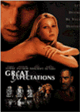

Contents | Features | Reviews | News | Archives | Store |
 |
|
| Movie Credits | Buy It! |
Great Expectations
Review by Carrie
Gorringe
Posted 30 January 1998
|  | Directed by Alfonso Curaron Starring
Ethan Hawke, Gwyneth Paltrow, Screenplay by Mitch Glazer, |
"She’ll break your heart," cooes the mad Ms. Dinsmoor (Bancroft) to a young Finn Bell as he stares, entranced, at the disdainful and beautiful Estella. Of course, anyone who is familiar with the Dickens classic will immediately realize that Finn is ensnared beyond any hope of rescue, and will, naturally, spend the rest of his life – or, at least, that portion of his life deemed interesting by novelist and filmmaker – in pursuit of the impossible. Modern audiences may not find this updated version to their taste, it being at times more of an academic exercise in book-to-film adaptation that leaves out much of the emotional conflicts that drove Dickens’ hero to a nearly self-destructive course of action. On the other hand, Dickens’ tale of obsessive love and hate – and the difficulty one often has in distinguishing between the two – is hardly without an overwrought emotional flavor. This is the novel, after all that has as its metaphorical centerpiece a rotting wedding cake, now home to countless spiders and mice – the symbol of true amour fou that has been distilled into an emotionally noxious libation, and still manages to dredge up a happy ending in spite of all the emotional whipping that has come before it. Curaron and Glazer, mercifully, spare us the potentially anachronistic and unappetizing metaphors that acted as emotional buffers to the torment contained within the novel’s pages, and instead go straight for unbridled, baroque heat. Unlike last year’s adaptation of Romeo and Juliet, with L.A. street gangs waxing too poetically with the Bard’s dialogue transplanted verbatim, this version of Great Expectations is thoroughly modern, and almost entirely laudable in its aims and achievements.
The scene of the would-be crime has been shifted from Victorian London to the lush tropicality of Florida, in a decaying Southern plantation named Paradiso Perduto (the setting and tone resemble nothing so much as a setting from one of Robert Aldrich’s 1960s mad-woman melodramas – Hush, Hush, Sweet Charlotte immediately comes to mind and/or Tennessee Williams gone to seed). Within the gates of this lost paradise, the embittered Ms. Dinsmoor plays cha-cha records, swills martinis by the pitcherful and fumes over her missed opportunity to disengage herself from her virginity some fifteen years earlier (at age forty-two!) in a manner befitting a good Southern girl (i.e., in the marriage bed). With the loss of her "gentleman caller," Dinsmoor has, she believes, learned the bitter truth about dependence upon the kindness of strangers. The grown-up Estella (Paltrow) is Dinsmoor’s ticket to revenge upon the entire male sex; through the entrapment of Finn (Hawke), Dinsmoor wants another to feel her pain. Finn nearly fulfils Dinsmoor’s destiny for him, except for one little incident beyond her control: prior to encountering the malevolently distaff atmosphere at Paradiso Perduto, Finn gave assistance to an escaped convict named Lustig (De Niro). At the point of Finn’s deepest despair, a lawyer appears, promising the talented young artist a chance to have his own one-man show in New York. His guardian, Joe (Cooper), encourages him to take the opportunity. Just as Finn is beginning to get back on his feet, in sails the spiteful Estella, clad in skintight Donna Karan, who toys with him over whether or not she should marry another man. Then Lustig reappears to deliver more revelations to him, and it’s difficult to tell which apparition from the past is more unwelcome.
This film is nothing if not psychological territory scraped raw over and over again, and the scraping is done with such self-assurance at all levels that it’s a delight to watch for those in the mood for a good, old-fashioned, emotional wallow. By no means is it Brief Encounter on steroids, but it does provide a reasonable enough facsimile of such an approach. Curaron provides Great Expectations with a sumptuously corrupt feel; it’s like watching an overripe peach on the verge of rotting. The performances, by and large, supplement this overall atmosphere. Paltrow has the elusive mix of come-hither glances and psychological armor down pat. Hawke lifts the specter of the tormented, love-obsessed artist above the level of cliché. De Niro infuses Lustig with a great deal of vulnerability and tenderness, especially in the later scenes; it is the most likeable and layered performance he has given in some time. Even Bancroft pulls off her late Bette-Davis posturing by giving it far more oily charm and less overblown emotional amplitude than the prototype ever did. The overall effect provided by the film is one of an almost-sensual beguilement, beginning with an incandescent, unreal visual style, filled with mysterious shadowing and diffused lighting that nevertheless glows with an unabashedly decadent feel (even the darkest of rooms featured seem to shimmer more than perhaps might be thought decent). The film slinks confidently through its paces, like a femme fatale with a strategically-bared shoulder, daring you to think your worst. If there is one false note about the film, it may stem from the negligence displayed by Curaron and Glazer in omitting the novel’s revelations concerning the relationship between the convict and Estella (he was her biological father); the preservation of it might have injected a somewhat greater sense of irony and loss to overcome some of the stasis into which the film falls in its final scenes. Despite that one potential flaw, Great Expectations does indeed live up to its own title.
Contents | Features | Reviews | News | Archives | Store
Copyright © 1999 by Nitrate Productions, Inc. All Rights Reserved.